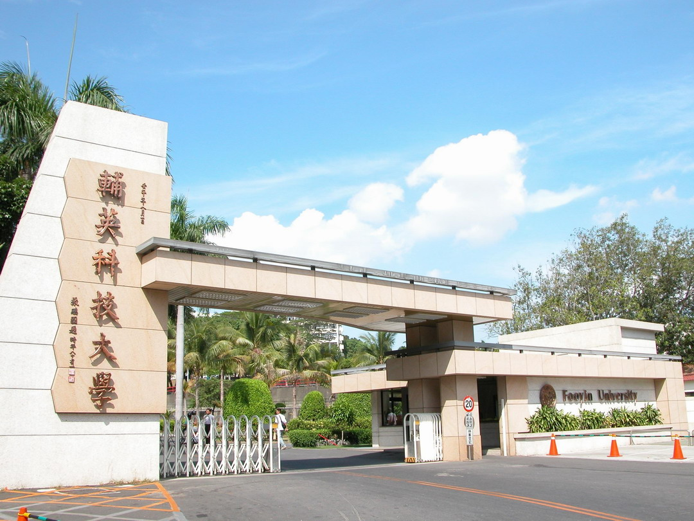

輔英科技大學

交通資訊
◆ 高雄捷運：乘高雄捷運(橘線)至【大寮站】二號出口處，即有接駁公車(橘20路(O20)或輔英直達車)可至本校大門口。若搭乘紅線者，需至【美麗島站】轉橘線。
◆ 公車：(資源來源：【橘20】東南客運、【紅8】港都客運、【橘11】與【8001】高雄客運)
1. 橘20C【大寮捷運站 - 輔英科大】接駁車(入校)：於【大寮站】二號出口處搭車，直接駛入本校校園「輔英科大校區站」(停靠站：校門口、圖書館、中正堂(宿舍區))，約8分鐘車程。(橘20B各於平日2班、假日3班繞駛入本校)
2. 橘20接駁車(未入校)：於【大寮站】二號出口處搭車，橘20接駁車共5線，其中除了橘20E【捷運大寮站－中庄(前庄)】線不經「輔英科大站」外，其餘4線(A、B、C、D線)皆有停靠位於鳳林路上的「輔英科大站」(為消防隊前)，下車後沿著「進學路」步行約500公尺即為輔英科大，詳東南客運網站 。
3. 紅8【小港站 - 輔英科大】公車(入校)：自小港總站發車，有行經捷運【小港站】，終點站直接駛入本校校園「輔英科大校區站」(停靠站：校門口、圖書館、中正堂(宿舍區))，車程約53分鐘。(路線詳港都客運網站)
4. 橘11【林園站 - 建軍站】公車(部份入校)：往返有各6班次繞駛入校(停靠站：校門口、圖書館、中正堂(宿舍區))，其餘班次請於「輔英科大站」(為消防隊前)下車，並沿著「進學路」步行約500公尺即為輔英科大，車程約30分鐘，詳橘11時刻表。(路線詳高雄客運網站)
5. 高雄客運8001【林園站-高雄】公車(未入校)：請於「輔英科大站」(為消防隊前)下車，並沿著「進學路」步行約500公尺即為輔英科大。高雄客運路線與時間表請詳高雄客運網站。
◆ 火車：
1.搭乘火車抵達【鳳山火車站】後，可轉搭捷運或公車至本校。請步行沿著「曹公路」，接「光遠路」後右轉直行，即可抵高雄捷運橘線【鳳山站】。其餘詳大眾運輸之【高雄捷運】資料或高雄客運網站。
2.搭乘火車抵達【高雄火車站】後，可轉搭捷運或計程車至本校。選擇捷運轉運者，可步行抵火車站前的高雄捷運紅線【高雄車站】。其餘詳大眾運輸之【高雄捷運】資料。